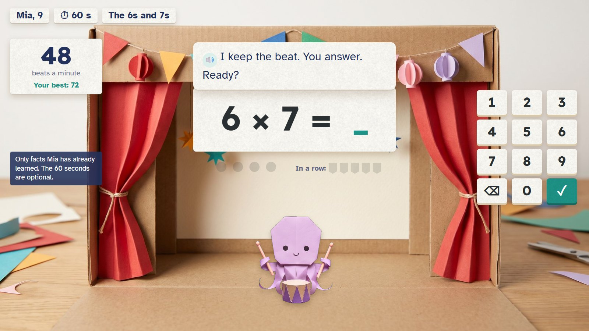
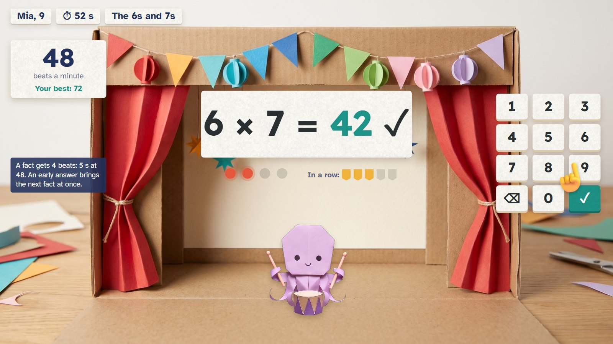
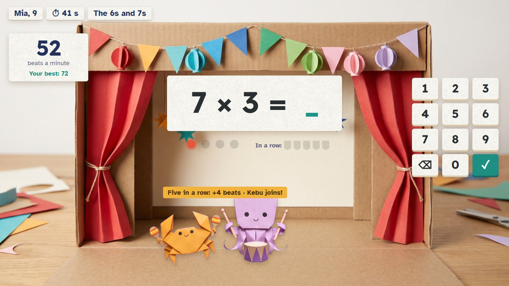
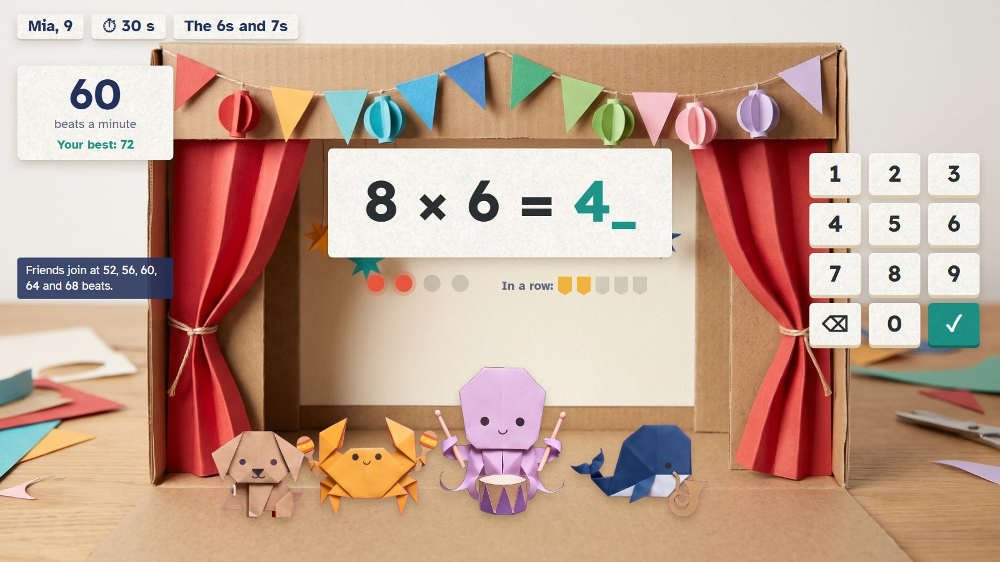
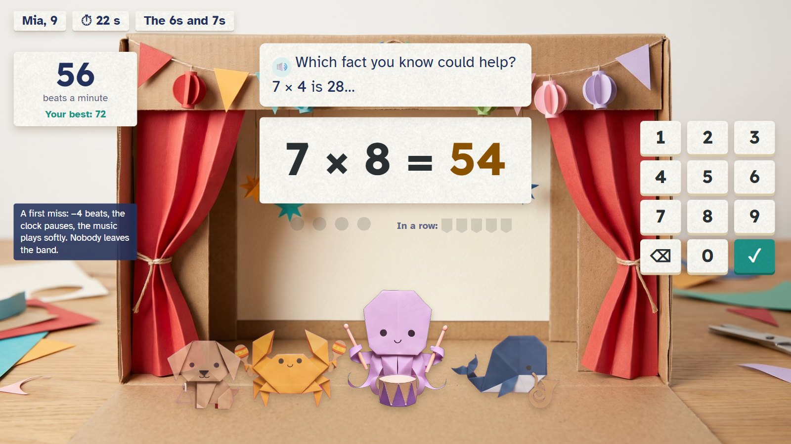
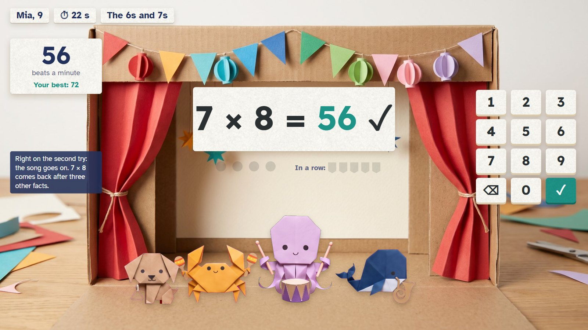
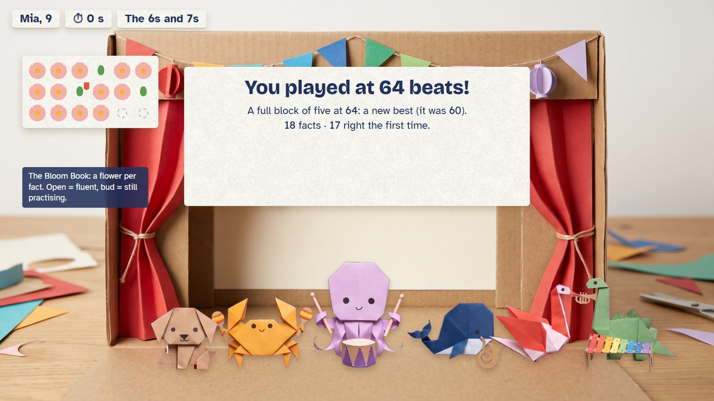
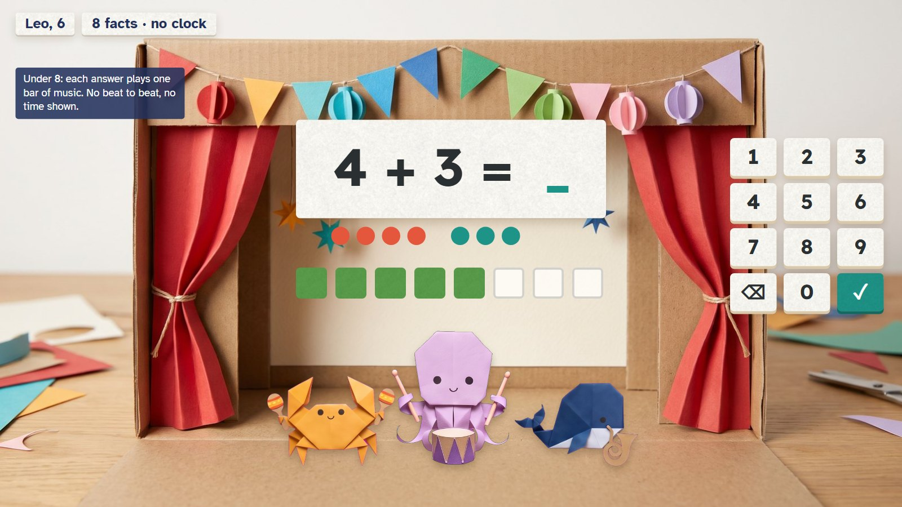

Ovu keeps the beat and the child answers number facts they already know. Every five right in a row, the music speeds up a little and another friend joins the band. A miss never stops the song: it slows a notch and Ovu gives a tip. The child's speed is the tempo they reach, and their best is beaten only by playing well, not just fast.

Mia is 9. Ovu the octopus waits with his drum; the first fact is on the stage, the number pad on the right. Tempo 48; her best is 72.
🔊 I keep the beat. You answer. Ready?
Only facts Mia has already learned. The 60 seconds are optional.

6 × 7 = 42, typed before the four beats of the phrase ran out. Three right in a row.
A fact gets four beats: 5 seconds at 48, 2.5 at 96. An early answer brings the next fact at once; typing never waits for the music.

Five in a row: the tempo rises to 52 and Kebu joins with his maracas.
Friends join at 52, 56, 60, 64 and 68 beats a minute.

At 60 beats, Nefu, Kebu and Welu are playing too.

7 × 8: Mia typed 54. It stays. The tempo drops to 56, the clock pauses, the music plays softly while Ovu gives a tip. Nobody leaves the band.
🔊 Which fact you know could help? 7 × 4 is 28…
The music never stops: a miss slows it one notch.

56. The song goes on.
7 × 8 comes back after three other facts. A fact whose answer was shown counts as practice, not speed.

Time is up: a full block of five at 64 beats, a new best. Beside it, the Bloom Book: a flower for every fact, open when fluent.
Personal bests only; no ranks, no names for being fast or slow.

Leo is 6: eight facts, pictures to help, no clock. Each answer plays one bar of music: the band follows him.
The same reward as the timed version.
| The Band | |
|---|---|
| Who | Ages 5–10. Ages 5–7: eight facts, untimed. Age 8: an optional 45 seconds. Ages 9–10: an optional 60 seconds; the untimed eight can always be chosen. |
| Under 8 | The band follows the child: one finished answer plays one bar. No beat to keep, no tempo, no time shown. |
| The beat | Starts at 48 beats a minute. Each fact gets a four-beat phrase (5 s at 48, 2.5 s at 96). Early answers bring the next fact at once. |
| Faster | Five right in a row inside their phrases: +4 beats, up to 96. A friend joins at 52, 56, 60, 64 and 68. |
| A miss | The answer stays; the clock pauses; −4 beats (never below 48); the row count starts again; the music plays softly during the tip. A slow right answer is fine: no tempo drop. |
| The result | The highest tempo at which a full block of five was finished. Also kept: each fact's usual answer time. |
| A best | Compared only on the same facts, the same way of answering and the same length, with at least 9 in 10 right first time. After two corrections a race finishes calmly and cannot set a best. |
| For every speed mode | |
|---|---|
| Which facts | Only facts already learned: right on the first try, without help, in at least 4 of 5 on each of two days. Bonds to 5 and 10, + and − within 20, doubles and halves, then × and ÷ to 12 × 12. |
| The mix | From age 8, ten at a time: 4 learned but slow, 4 other learned, 2 easy ones. Younger: 8 at a time (4 due, 2 ready, 2 easy). |
| Fluent | From age 8 (a starting guess to test): 9 of 10 right first time over at least two days, usually answered within 3 seconds. Speed never decides whether a skill is learned. |
| No ranks | Only "your new best". No public tables, no titles for speed. |
Every answer stands a paper domino; an answer right first time gets a little flag. At the end the child knocks the first one and the run races through the town, ringing up to three bells (3 seconds). Eight untimed facts, or 60 seconds from age 8. A longer best reaches a new place on the table.
Lift a flap to see some dots; it stays open until the child closes it. Pick the matching number card. 1–3 first, then 5, then "5 and some more" up to 10. Five a game, no clock: a gentle start on seeing amounts at a glance.
Pick one learned fact family; a paper wheel turns to the next fact (4 × 3, 3 × 4, 12 ÷ 4). Eight facts, untimed; from age 8 it keeps your usual answer time. Good for practising one family at a time.
Not a game: a book of pressed paper flowers, one per taught fact. A bud is still practising, an open flower is fluent, a little tab means "practice due". Tap a flower to practise its family. Parents can switch it to a plain number grid.